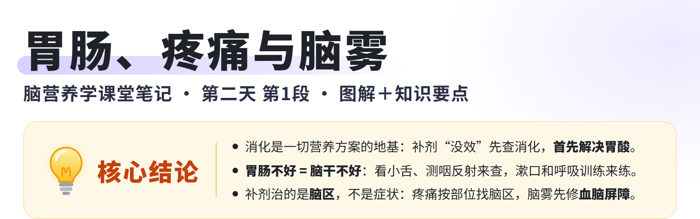
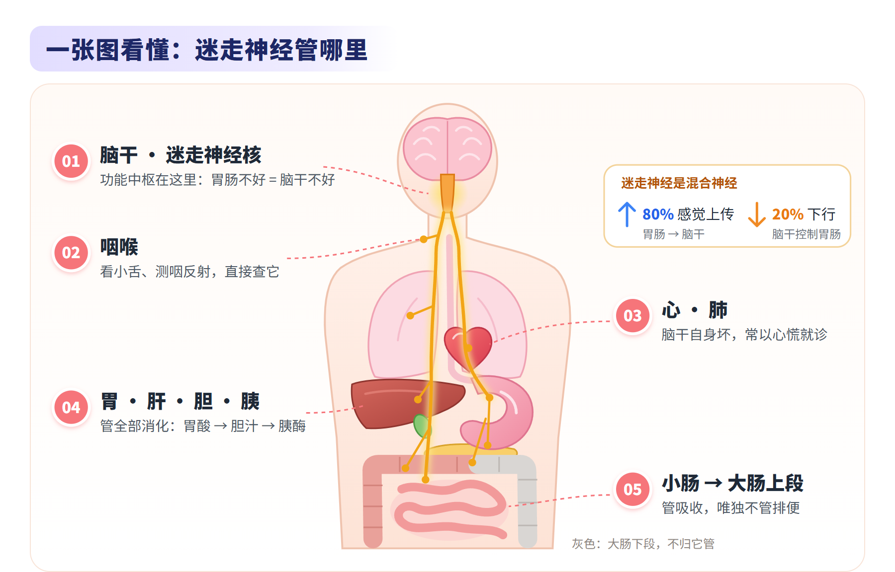
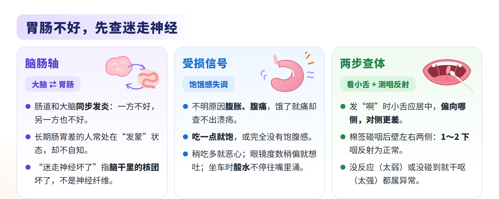
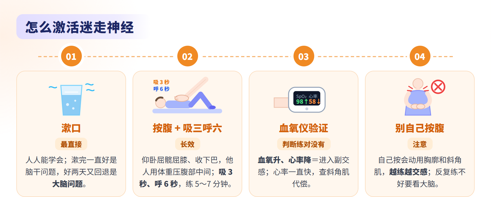
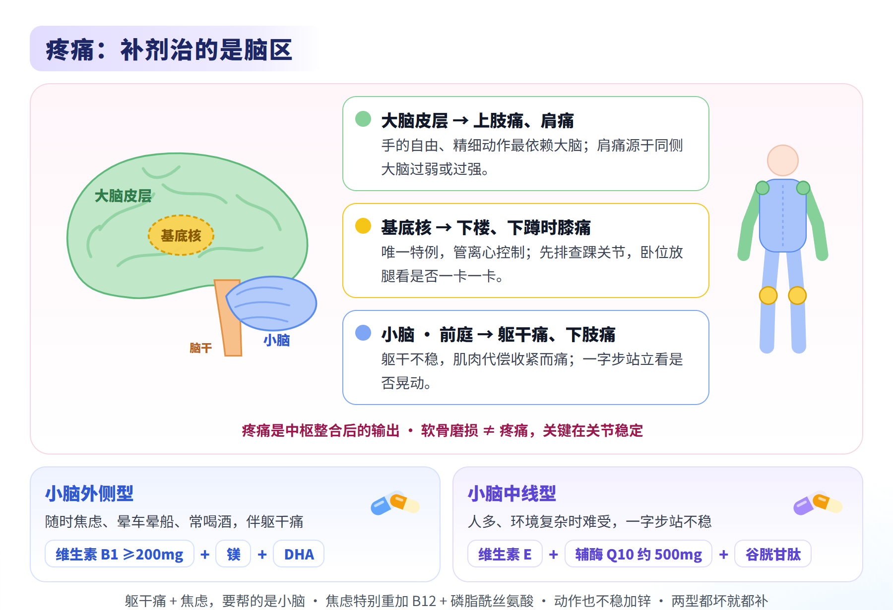
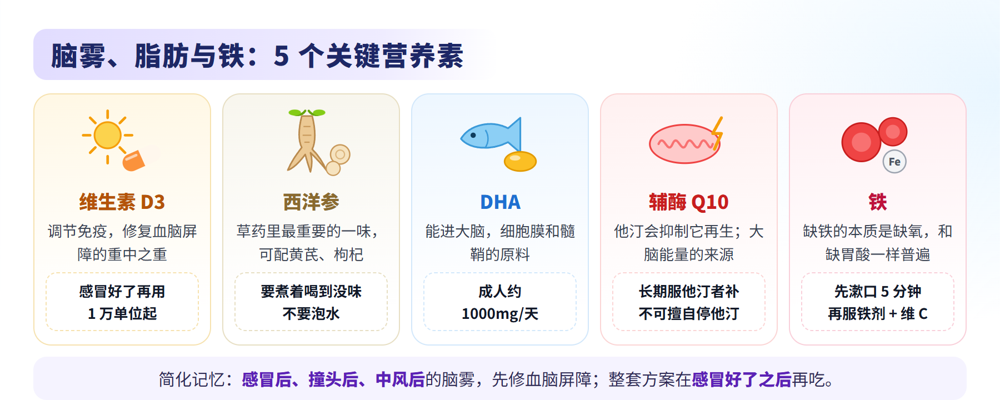
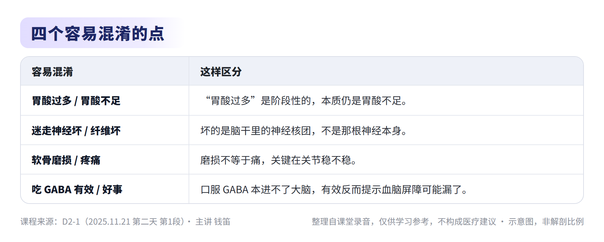
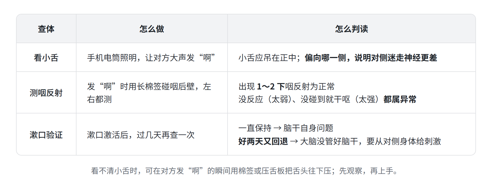
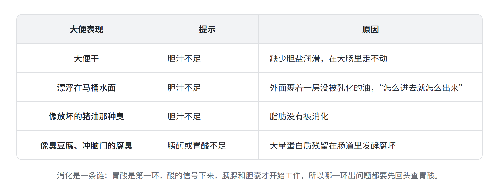
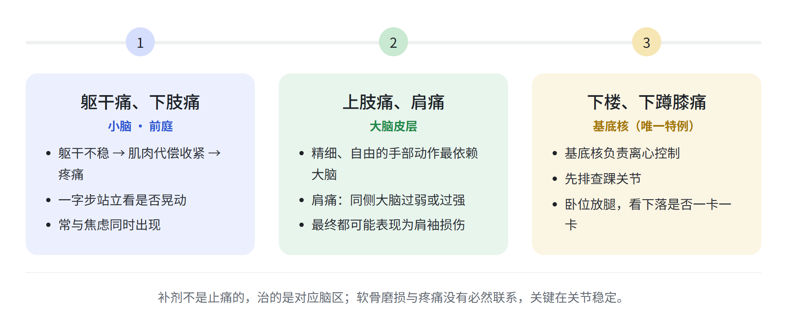

脑营养学 · 第二天 第1段
主题：迷走神经与脑干、消化链条、疼痛、血脑屏障、DHA 与铁
主讲：钱笛 ｜ 日期：2025 年 11 月 21 日（周五） ｜ 时长：2 小时 40 分 44 秒
本纪要整理自课堂录音，仅供学习参考，不构成医疗建议。







总结
本段是第二天的第一段课。老师从“消化是一切营养方案的前提”讲起，先讲迷走神经与脑干的查体和激活、消化链条怎么判断，再从营养角度讲疼痛，接着讲血脑屏障与脑雾、DHA 与他汀，最后开讲铁。内容如下：
- 消化与迷走神经
- 消化是营养方案的前提
- 先查消化：很多补剂和养生方案本身未必错，是默认“消化没问题”让它在实践中失败；补铁半年指标不动的人，多半卡在消化。
- 脑肠轴：大脑与肠道双向影响，大脑发炎则肠道发炎，反之亦然；长期肠胃差的人常处在“发蒙”状态而不自知。
- 恢复期的怪异感：大脑练好后，肚子可能出现一种说不出的怪异感，约一周到 10 天消失，是肠道感觉与大脑重新连接的表现。
- 迷走神经：中枢在脑干
- 混合神经：约 80% 纤维从胃肠向上传到脑干，约 20% 从脑干向下控制胃肠；它管所有消化吸收，唯独不管排便。
- 坏的是核团：所谓“迷走神经坏了”，指脑干里的迷走神经核团坏了，可以简记为“胃肠不好 = 脑干不好”；左侧脑干管左侧内脏，右侧管右侧。
- 受损表现：不明原因的腹胀腹痛、吃一点就饱或完全没有饱腹感、稍吃多就恶心、胃部颤动感；眼镜度数稍偏就想吐、坐车时酸水不断涌进嘴里，也提示这个区域不好。
- 饥饿痛与进食原则：一饿就痛却查不出溃疡，多是大脑为驱动觅食制造的不适；吃几餐不是关键，关键是在固定的时间窗内吃完，让内脏休息。
- 查体与激活
- 看小舌：手机电筒照明，让对方大声发“啊”，小舌偏向哪一侧，说明对侧迷走神经更差。
- 测咽反射：用长棉签碰咽后壁，左右都测；出现 1～2 下咽反射为正常，没反应或没碰到就干呕都属异常。
- 区分脑干还是大脑：漱口后一直好，是脑干自身的问题；好两天又回退，是大脑没管好脑干，要从对侧身体给刺激。
- 激活方法：漱口最直接；长效的方法是“按腹 + 吸三呼六”——仰卧屈髋屈膝、稍收下巴，由他人用身体重量压在腹部中间，吸 3 秒、呼 6 秒，练 5～7 分钟。
- 判断练对：夹上血氧仪，血氧升、心率降，说明进入副交感；心率一直快，要检查斜角肌代偿。不要自己按腹，越练越交感。
- 脑干与衰老：脑干是否健康，很大程度上决定衰老速度；性功能也由脑干管。
- 消化是营养方案的前提

- 消化链条怎么判断
- 胃酸是第一环
- 首先解决胃酸：胃酸是后续所有消化信号的起点，不足会引起一连串消化酶不足，直至便秘。
- 没有人真正胃酸多：“胃酸过多”是阶段性的，本质仍是胃酸不足。
- 用问卷代替口头问：客户常把多年的异常当正常，问卷给出客观结果；测出“低风险”不是没事，而是已经有事、要开始处理。
- 胆汁与胰酶
- 胆汁不足的线索：吃油腻就胀、打嗝；客户说“怕油”，就要警惕胆汁问题。
- 不吃早餐与胆结石：一直不吃早餐的人不会因此得胆结石，一直吃早餐突然不吃，胆汁才可能淤积。改做 16+8 的人，早上可以吃鱼油或姜黄素，并把脂溶性维生素放在早上吃，帮助胆汁排泄。
- 姜黄素的提醒：吃后右上腹轻微疼痛，要排查胆囊炎、胆结石或胆泥。
- 看大便：大便干、漂浮、有坏猪油味，提示胆汁不足；像臭豆腐那样的蛋白质腐臭，提示胰酶或胃酸不足。
- 胃酸是第一环

- 从营养角度看疼痛
- 疼痛的逻辑
- 疼痛是中枢的输出：中枢整合外周信号、当下的感知和记忆之后“制造”疼痛，所以补剂不是止痛的，治的是对应脑区。
- 定位原则：躯干痛、下肢痛找小脑与前庭；上肢痛、肩痛找大脑；下楼梯、下蹲时膝痛是唯一特例，找基底核（先排查踝关节）。
- 躯干痛、焦虑与小脑
- 一字步测试：一脚在前、一脚在后站立，看是否晃动、衣服是否在抖，看不出就闭眼再测。
- 小脑也管情绪：躯干易痛的人也容易焦虑，两者同时出现，要帮的是小脑。
- 外侧型：任何时候都焦虑，常伴晕车、喝酒；补维生素 B1（不少于 200mg，喝酒的人 500mg，补 B1 期间不要喝酒）+ 镁 + DHA。
- 中线型：人多、环境复杂时难受，一字步站不稳；补维生素 E + 辅酶 Q10（约 400～500mg）+ 普通谷胱甘肽。
- 加强与选购：焦虑特别重加 B12 + 磷脂酰丝氨酸，外周动作也特别不稳加锌；B1 要买单独的片剂，复合维生素各成分含量太少。
- 四肢与关节
- 离心控制查体：躺下放松，把腿抬起后放手，看下落是否偏慢、是否一卡一卡，两侧对比。
- 软骨磨损不等于疼痛：关键在关节稳定；单吃氨糖效果差，要同时补胶原蛋白，并配合往关节中心适度挤压的手法。
- 骨刺：由异常应力造成，与年龄无关；长期稳定关节后可能变小，但时间无法预知，不要向客户承诺能消除。
- 四组补剂：重点是第一组（含姜黄素、维生素 D，用于类风湿、一感冒或一喝酒就关节痛等炎症性关节痛）和第三组（针对大脑）；软骨退化、痛风和糖尿病等代谢问题，再分别加第二、第四组。各组完整成分见课件。
- 疼痛的逻辑

- 血脑屏障与脑雾
- 脑雾从哪里来
- 胶质细胞发炎：大脑的免疫反应靠胶质细胞；血脑屏障漏了，不该进的东西进入大脑，激活胶质细胞，就会出现脑雾。
- 让屏障变漏的原因：撞头（尤其连续撞头）、感染、吸入有毒化学物（臭氧、环氧乙烷、戊二醛、四氯化碳等），以及长期促炎饮食和自己敏感的食物。
- GABA 的反推：口服 GABA 理论上进不了大脑，吃了反而有效，说明血脑屏障可能已经漏了，不是好事。
- 修复方案
- 适用人群：感冒后脑雾、撞过头、中风后。
- 核心组合：以大剂量维生素 D3 为重中之重（修复血脑屏障 1 万单位起），配合姜黄素、白藜芦醇、褪黑素（每天不超过 5mg）；组合与其余剂量见课件。
- 草药：最重要的是西洋参，要煮，像喝茶一样喝到没味，不要泡水；黄芪、枸杞可以一起用；当归吃多有肝肾毒性。
- 时机：整套方案在感冒好了之后再吃；感冒期间多吃维生素 C 即可。
- 脑雾从哪里来
- 脂肪、他汀与铁
- DHA 与油脂
- 欧米伽-6 过多：常用植物油让欧米伽-6 越吃越多，超量后变成促炎；容易做到的是多补欧米伽-3，家里高温炒菜可以用猪油。
- DHA 的作用：能透过血脑屏障（EPA 不能），维持细胞膜流动性、让小胶质细胞不过度激活，也是髓鞘的原料；成人每天约 1000mg 效果就很好。
- DHA 不足的原因：胆汁排泄差、长期服他汀、近海养殖带来的饮食结构变化。
- 他汀与大脑
- 他汀的代价：长期使用会加速大脑退化，并抑制辅酶 Q10 的再生。
- 替代或辅助思路：控糖解决胰岛素抵抗 + 辅酶 Q10 + 烟酸（与 B6、B9、B12 同补，出现潮红就换烟酰胺）。只限自己或家人尝试；客户正在服他汀且有斑块，千万不能让他停药。
- 脑白质病变：磁共振上的“多发脑白质高信号”就是髓鞘脱落，与缺脂肪、大脑能量不足有关，要补辅酶 Q10。
- 铁（本段开头部分）
- 缺铁就是缺氧：缺胃酸有多普遍，缺铁就有多普遍，而且很容易被忽略。
- 补铁为什么失败：首先是胃酸不足，晨起空腹先漱口 5 分钟再服铁剂；其次是维生素 C 不足。两点都做到，补铁通常不会失败。
- 查铁的陷阱：要查血清铁蛋白，但炎症会让它“假高”，需要结合红细胞体积一起看。
- 表现与高危人群：头发广泛稀疏枯黄、容易累、皮肤是没有血色的白；慢性失血（痔疮、消化道出血）、长期素食、脑发育迟缓的儿童要特别注意；补上去又很快掉下来，要找出血点。
- DHA 与油脂
章节速览
时间为本段录音内的时间点。
00:01消化是一切营养方案的前提
第二天从消化讲起：很多补剂和养生方案本身未必错，是默认“消化没问题”让它在实践中失败，补铁半年指标不动就是典型。学习目标是以后设计方案时，能自己找出哪个环节留了漏洞。
02:18脑肠轴：大脑和肠道互相拖累
大脑与肠道双向影响，上皮组织与大脑皮层同源，一方发炎另一方也发炎。长期肠胃差的人常处在“发蒙”状态，却不知道清醒是什么感觉。
04:20迷走神经：功能中枢在脑干
迷走神经是混合神经，约 80% 纤维向上传感觉、20% 向下控制胃肠。只从肠道下手效果不够时，要考虑脑干里的迷走神经核团没管好；大脑恢复初期肚子出现怪异感，是肠道感觉与大脑重新连接。
08:23饥饿痛的进化解释与进食原则
不明原因的腹胀腹痛属于迷走神经问题；一饿就痛却查不出溃疡，多是大脑为驱动觅食制造的不适。人不一定需要早餐和三餐，关键是在固定时间窗内吃完，让内脏休息。
17:17迷走神经受损的日常信号
吃一点就饱、完全没有饱腹感、稍吃多就恶心、胃部颤动感，都提示脑干问题。前庭核与迷走神经相邻，所以眼镜度数稍偏就恶心、坐车时酸水不停涌进嘴里，也是迷走神经不好。
23:21查体：看小舌与咽反射
迷走神经支配咽喉肌，一侧坏了，小舌会被拉向对侧，偏向哪侧说明对侧更差。小舌居中时用棉签碰咽后壁两侧，1～2 下咽反射为正常，没反应或没碰到就干呕都属异常。
27:37脑干自己坏，还是大脑没管好
左右脑干各管同侧内脏，又受同侧大脑管理。漱口后一直好是脑干自身问题；好两天又回退是大脑问题，要从对侧身体给刺激来练大脑。
33:25激活迷走神经：按腹 + 吸三呼六
漱口简单但不长效；呼吸中枢与迷走神经在同一区域，调好呼吸等于持续激活副交感。仰卧屈髋屈膝收下巴，由他人用体重压腹部中间，吸 3 秒呼 6 秒练 5～7 分钟，用血氧仪判断是否练对。
48:13查体技巧与脑干、衰老
看不清小舌时，在对方发“啊”的瞬间用棉签或压舌板压住舌头。迷走神经反复练不好一定要看大脑；脑干是否健康很大程度上决定衰老速度。
51:51胃酸：一切消化问题的第一环
所有消化问题首先解决胃酸，胃酸不足会引起一连串消化酶不足直至便秘。没有人真正胃酸多，“胃酸过多”是阶段性的，本质仍是不足。
53:22消化功能问卷怎么看
口头问消化和大便常常问不清，问卷能给出客观结果。测出低风险不是没事，而是已经有事、要开始处理；消化系统通常要么全坏、要么大部分好。
58:22胆汁、胰腺与不吃早餐
怕油要警惕胆汁不足。一直不吃早餐不会因此得胆结石，突然不吃才可能淤积；改做 16+8 的人，早上可以吃鱼油或姜黄素，并把脂溶性维生素放在早上吃。
1:03:32从大便判断胆汁、胰酶与胃酸
便秘分“大便干”和“干不干都排不出”两类，代表不同信号。大便干、漂浮、有坏猪油味提示胆汁不足；臭豆腐般的蛋白质腐臭提示胰酶或胃酸不足。
1:09:01疼痛是中枢的输出
疼痛由中枢整合外周信号、当下感知和记忆后输出，不是单纯的感觉输入。所以补剂不是止痛的，治的是对应脑区。
1:10:43躯干痛来自小脑：一字步测试
躯干不稳时，大脑收紧颈部和竖脊肌来求稳，肌肉一紧就激惹交感和 C 纤维而痛。一字步站立看是否晃动、衣服是否在抖，看不出就闭眼再测。
1:13:57小脑与焦虑：外侧型与中线型
小脑也管情绪，躯干易痛的人也容易焦虑。外侧型补维生素 B1、镁、DHA，中线型补维生素 E、辅酶 Q10、谷胱甘肽，中线还是外侧要靠查体判断，都坏就都补。
1:26:50答疑：断食期间吃补剂与加强组
16+8 期间早上吃鱼油会稍微减弱效果，但能做到 16+8 已经很好，不必计较。B1 要买单独的片剂；焦虑特别重加 B12 和磷脂酰丝氨酸，外周动作不稳加锌。
1:31:48四肢痛定位与基底核
上肢痛找大脑，下肢痛找小脑和前庭；下楼梯、下蹲膝痛是唯一特例，对应基底核的离心控制。现场演示了卧位放腿、站床下蹲两种股四头肌查体。
1:43:12肩痛与关节软骨
肩痛的根源在大脑：同侧大脑过弱或过强，最终都可能表现为肩袖损伤。软骨磨损与疼痛没有必然联系，取决于关节稳定；单吃氨糖效果差，要配胶原蛋白和关节挤压手法。
1:48:11关节痛四组补剂与骨刺
重点是第一组（炎症性关节痛，含姜黄素、维生素 D）和第三组（针对大脑），软骨退化、代谢问题再加第二、第四组。骨刺由异常应力造成，长期稳定关节后可能变小，但不要向客户承诺。
1:57:34血脑屏障与脑雾
大脑的免疫靠胶质细胞，血脑屏障漏了就会激活胶质细胞、出现脑雾。撞头、感染、有毒化学物和长期促炎饮食都会让屏障变漏；口服 GABA 有效，反而提示屏障可能已经漏了。
2:05:23修复血脑屏障与西洋参
感冒后脑雾、撞头、中风后，以大剂量维生素 D3 为核心，配合姜黄素、白藜芦醇、褪黑素。草药首选西洋参，要煮着喝；当归吃多有肝肾毒性；整套方案在感冒好了之后再吃。
2:12:21欧米伽-6 过多与猪油
常用植物油让欧米伽-6 越吃越多，超量就促炎，容易做到的是多补欧米伽-3。中国是高温烹饪，猪油最扛高温、欧米伽-3 与欧米伽-6 的比例也好。
2:16:37DHA 的作用与不足的原因
DHA 能透过血脑屏障，是细胞膜和髓鞘的原料，还能给大脑消炎，成人约 1000mg 就很好。胆汁差、长期服他汀、饮食结构变化都会让 DHA 不足，长期服他汀会加速大脑退化。
2:22:03他汀的替代思路与脑白质病变
高血脂多是代谢变慢的结果，根在胰岛素抵抗和高碳水；替代思路是控糖 + 辅酶 Q10 + 烟酸及 B 族，但客户正在服他汀且有斑块，千万不能让他停药。脑白质病变就是髓鞘脱落，要补辅酶 Q10。
2:28:30缺铁就是缺氧：补铁为什么失败
缺胃酸有多普遍，缺铁就有多普遍。补铁失败首先因为胃酸不足，晨起空腹漱口 5 分钟再服铁剂；其次是维生素 C 不足，两点都做到通常就不会失败。
2:34:24查铁的陷阱与缺铁表现
要查血清铁蛋白，但炎症会让它假高，需要结合红细胞体积看。缺铁表现为头发广泛稀疏枯黄、易累、皮肤没有血色；慢性失血、长期素食、脑发育迟缓的儿童要特别注意。
关键内容
本段为讲座，没有需要决策的事项。关键内容如下：
- 消化先行：补剂和方案“没效”先查消化，所有消化问题首先解决胃酸。
- 迷走神经与脑干：胃肠不好 = 脑干不好；看小舌、测咽反射来查，用漱口和“按腹 + 吸三呼六”来练，反复回退要看大脑。
- 疼痛按脑区处理：躯干痛、下肢痛找小脑与前庭，上肢痛找大脑，下楼和下蹲膝痛找基底核；补剂治的是脑区，不是疼痛本身。
- 小脑与焦虑：躯干痛加焦虑要帮小脑，外侧型、中线型各有一组补剂，都坏就都补。
- 脑雾与血脑屏障：感冒后、撞头后、中风后的脑雾，以大剂量维生素 D3 为核心修复，感冒好了之后再吃。
- 脂肪与他汀：多补欧米伽-3、家里用猪油，DHA 护脑；长期服他汀要补辅酶 Q10，但不能擅自停药。
- 补铁：缺铁的本质是缺氧；补铁前先保证胃酸（晨起漱口）和维生素 C。
金句时刻
「管这些内脏的迷走神经，它的功能中枢就在脑干，所以我们可以简单地认为：你只要胃肠不好，就是脑干不好。」
—— 把肠胃问题从肠道本身上移到脑干，是这一段所有查体和激活方法的出发点。
「接下来讲的补剂不是治疼痛的，它治的是小脑，然后再让你的小脑管好你的躯干，于是它就不会痛了。」
—— 点明用营养处理疼痛的思路：对准脑区，而不是对准症状。
「关节的软骨磨损跟疼痛有必然联系吗？其实没有，它只取决于你关节的稳定程度。」
—— 纠正“软骨磨了就会痛”的常见误解，把注意力引回关节稳定和背后的脑功能。